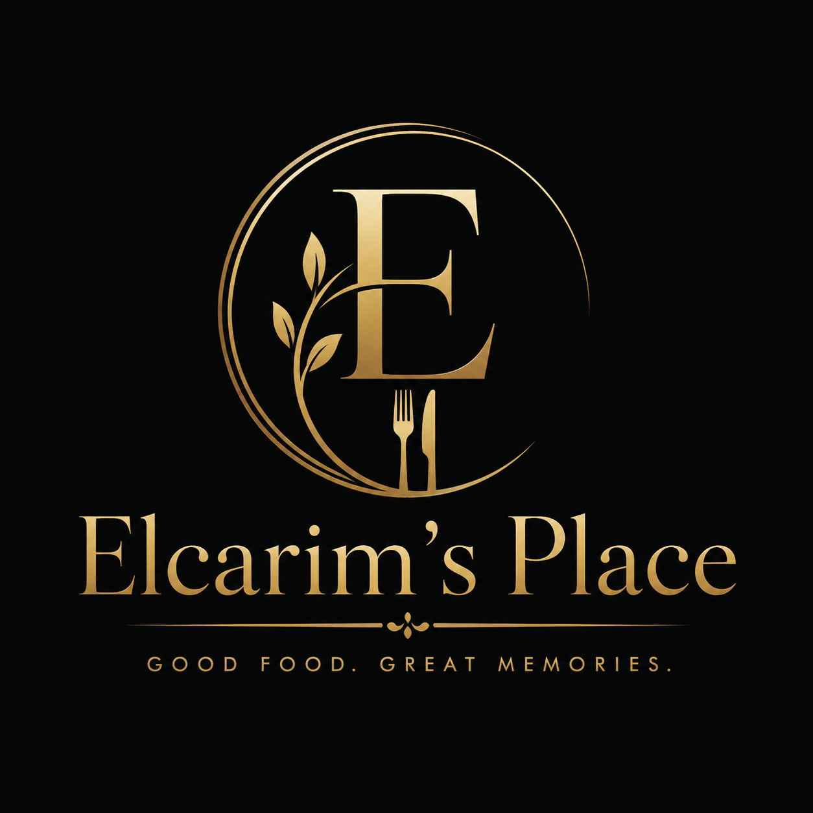
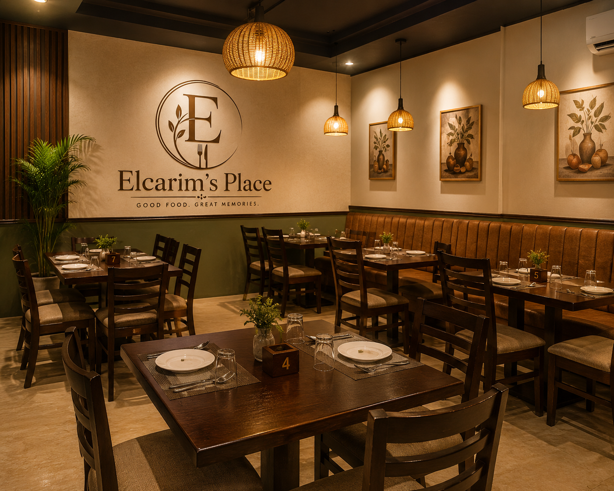

Elcarim's Place was opened in 2023 as a small restaurant focused on quality and tasty recipes. We use fresh ingredients each day.
Now is currently headed by the CEO Mr.Elcarim and has become one of the best restaurants in Nigeria.
From serving delicious and extremely tasty wood-fire grilled delicacies
To deliver tasty, affordable well-made dishes and friendly dining experience to every guest.